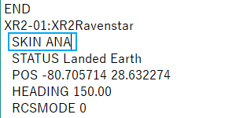

XR2 Ravenstarのダウンロード+インストール
特徴
Orbiter2016でのみ動作します。
2010対応版は配布を終了しています。
XR2 Ravenstarは、スクラムジェットエンジンを搭載したスペースプレーンです。
姿勢制御・着陸を補助するオートパイロットを実装しており、大気圏内での操縦性能に優れています。
また、燃料タンクや居住区などのペイロードを増設することもできます。
一方で、初期機体のDelta Gliderと比べて非常に壊れやすく、航続距離が若干短くなっています。
より難しい機体に挑戦したいプレイヤーにおすすめです。
ダウンロード
以下のページへ飛んで、Download Zip Fileのリンクをクリック。

インストール
ダウンロードしたファイルを解凍する。
中のファイル・フォルダをコピーして、Orbiterフォルダに上書き。
操作方法
見た目（スキン）の変更
ユーザーの作成したMODを導入して、XR2の見た目を変えることができる。
ダウンロード
以下のリンクをクリック。
使いたいスキンを選んでRead More...をクリック。
Downloadボタンをクリック。
Orbit Hangar Mods - Search results for "xr2 skin"
インストール
ダウンロードしたファイルを解凍する。
Texturesフォルダをコピーして、Orbiterフォルダに上書き。
スキンを適用する
シナリオファイルを編集して、新しいスキンを適用する。
Scenarios\XR2 Ravenstarフォルダを開く。
1 - Ready for Takeoff to ISS.scnを右クリック。
メモ帳などのテキストエディタで開く。
BEGIN_SHIPSの下にある、XR2Ravenstarを探す。
SKINの行を追加・変更する。
ANAというスキンを追加する場合は、以下のようになる。
XR2-01:XR2Ravenstar
SKIN ANA
ノーマルマップの追加
ノーマルマップを追加すると、船体表面の凹凸を再現できる。
ダウンロード
Normal Maps Pack for XR-2 Ravenstar
インストール
ダウンロードしたファイルを解凍して、中のファイルをすべてコピーする。
Textures\XR2Ravenstarフォルダを開いて、コピーしたファイルを貼り付ける。
スキンと併用する
以下の2つのファイルをコピーする。
- top_hull_colour_XR2_paint_norm.dds
- bottom_hull_norm.dds
Textures\XR2Ravenstar\Skins\スキンの名前フォルダを開く。
コピーしたファイルを貼り付ける。